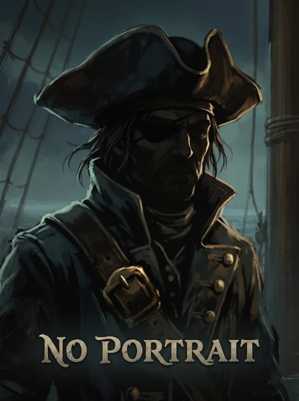

Fireproof
You are immune to damage from magical or mundane flame.

Warlock Emberkin Warborne Level 3
Master Gunner, raining fire.
You are immune to damage from magical or mundane flame.
Mark a Stress to wreathe your primary weapon in flame until the end of the scene. While the weapon is ablaze, it gives off a bright light, and you gain a 1d6 bonus to damage rolls with that weapon.
Once per session when you would be forced to mark a Stress, you can spend a Hope instead.
When you fail a roll, you can spend 3 Hope to reroll with advantage.
You have committed yourself to a supernatural entity —such as a god, fae, or demon—in exchange for power. Write their name on your character sheet, then work with your GM to determine their sphere of influence (such as Nature, Chaos, Wisdom, Mischief, Love, War, Justice, or Death). Before making an action roll that relates to your patron's sphere of influence, you can spend a Favor to call upon their aid, rolling your Patron Die and adding its result to the total. Your Patron Die starts at a d6 and increases to a d8 at level 5.
You start with 3 Favor. You can use a downtime move to show tribute to your patron. Describe how and gain Favor equal to your Spellcast trait. Additionally, when you succeed on an action roll with Hope, you can choose to gain a Favor instead of a Hope.
Spend a Favor to imbue your attacks with your Patron's power until you deal Severe damage or the scene ends. When you roll damage while this effect is active, you also roll a number of Patron Dice equal to your tier and add their total to the damage dealt.
When you mark any number of Hit Points from an attack, you can spend a Favor to roll an equal number of Patron Dice. For each result of 4 or higher, the attacker marks a Hit Point.
Spend a Favor to increase the range of your primary weapon by one step (such as Melee to Very Close or Very Close to Close) to a maximum of Very Far range. This effect ends when you make a successful attack with that weapon.
When you succeed with Hope on an action roll against a target, you can spend any number of Favor to force the target to mark an equal number of Stress.
Spend a Favor to reroll any number of your damage dice. You can continue spending Favor to use this feature on the same damage roll.
Once per rest when you take damage, you can spend any number of Favor to roll that many Patron Dice and target a number of creatures within Close range equal to the highest result. Each target must mark a Hit Point.
The master gunner is usually a gunner who has risen through the ranks and is now in charge of teaching unranked crew how to load, aim, and fire the ship's weapons. The master gunner is also responsible for checking the quality and quantity of ammunition, and ensuring that ship weapons are kept in good condition.
If the master gunner station is empty, you cannot use unique ammunition.
Rank 1. Master Gunner Station (Ship Combat). When you fire weapons during the Attack Phase, the Master Gunner can spend a point of Hope to reroll a number of misses equal to their rank of the master gunner, whether you have the weather gage token from a target or not. If you do have the weather gage, this ability stacks with its effects. In other words, you can reroll a miss (because you have the weather gage), and if that reroll is also a miss, you can reroll a second time (because you have a master gunner aboard).
Expanded Features
Rank 2. Boon. Choose one boon from the boon list.
Rank 3. Shoot the Breeze (Voyage). In your experience, most problems can be solved with cannons. When your ship encounters a non-combat hazard while at sea (see Hazards), you can devise a way to assist in circumventing it using cannons. This might include shooting through thick fog to increase visibility or scaring off wildlife threatening the ship. Your actions reduce the difficulty associated with overcoming the obstacle by 2. Your GM may choose an alternative benefit of similar power. Once used, you must use a downtime move while docked at a port to regain this features use.
Rank 4. Boon. Choose one boon from the boon list.
Rank 5. Fire Everything! (Mastery). By spending a point of Hope, you can reduce the target number for all your cannons to hit by 1 (to a minimum of 2) for the remainder of your ship's attacks during an Attack Phase.
Master Gunner's Achievements
Master gunners earn their promotions by making things go boom – ideally, other ships! Some suggestions for master gunner achievements are:
Only someone with a Spellcasting trait can take this Boon. When hit by cannon fire, you can spend a point of Hope to roll 1d4 and cancel that many hits. Once you use this boon, you can't use it again until after you take a long rest.
Make a Spellcast Roll against a target within Far range. On a success:
On a failure, you must spend a Hope or mark a Stress.
Spend a Hope to gain advantage on a roll to deceive or trick someone into believing a lie you tell them
Make a Spellcast Roll against a target within Very Close range. Once per long rest on a success, the target takes d12+4 magic damage using your Proficiency. On a success with Fear, you gain a +1 bonus to your Proficiency for this attack.
You clear a number of Hit Points equal to the number of Hit Points the target marked from this attack.
You can transfer suffering from one creature to another. Once per rest, mark any number of Hit Points on a willing creature within Melee range to clear an equal number of Hit Points on another willing creature within Melee range.
Handfuls 1
Presence · Melee · 2d8+1 phy
Presence · Melee · 2d4 phy
Padded. Gain this weapon's tier + 1 to damage thresholds.
Thresholds 4/10 · Armor Score 2
Enchanted. Gain a bonus to your damage thresholds equal to your Spellcast trait.
Clear 1d4 Stress.
Who from your community shunned you after you made a pact with your patron?
What desperate situation led you to pledge your life to your patron?
Your patron has given you one task you must accomplish above all else. What is it, and why does it worry you?
Why do you think I confide in you about what my patron says and does?
Our relationship has changed since you saw me show tribute to my patron. What did you see, and how has it affected you?
I once did something very foolish, and you've never let me live it down. What was it?
An unofficial fan site for a private Daggerheart campaign.